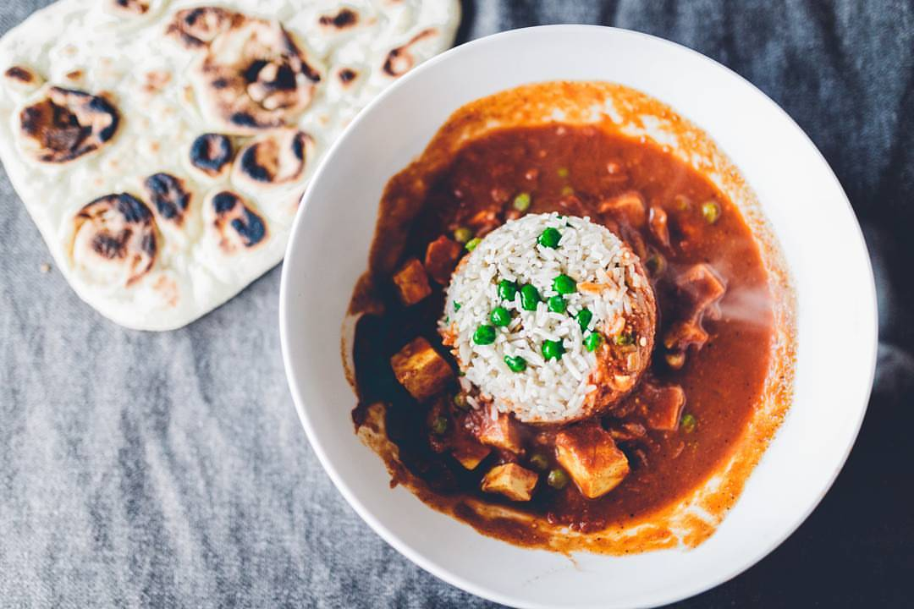

Paneer Tikka Masala

Description
Paneer masala is a spicy and creamy dish from the north of India. Cubes of cottage cheese, are simmered in a tomato based sauce, with aromatic spice. It is typically accompanied by a side of rice or naan.
Ingredients:
- Paneer
- Tomatoes
- Onions
- Ginger
- Garlic
- Peas
- Cumin
- Red Chilli
- Coriander Seed
Steps:
- Toast the whole spices (cumin, red chilli, coriander) on a dry skillet, until they are aromatic. Once they start to smell, put them in spice grinder and grind it to a powder.
- Peel the ginger and garlic, and add them to a blender or food processor, with some olive oil and grind to a paste.
- Heat a pan with ghee, then add the onions. Cook until the onions turn translucent and look a little caramelized.
- Add the paste of ginger and garlic, and continuing cooking until the paste turns brown and the raw smell is cooked out.
- Add the spice powder mix, and cook for a few mins without burning
- Add the can of tomato sauce or crushed tomatoes.
- One the tomatoes have stewed for a few mins, add the cubes of paneer. Let this stew for a few mins, so the paneer absorbs the flavor.
- Turn the heat off, pour in the cream, and garnish with cilantro.
- Serve with a bowl of white rice or naan